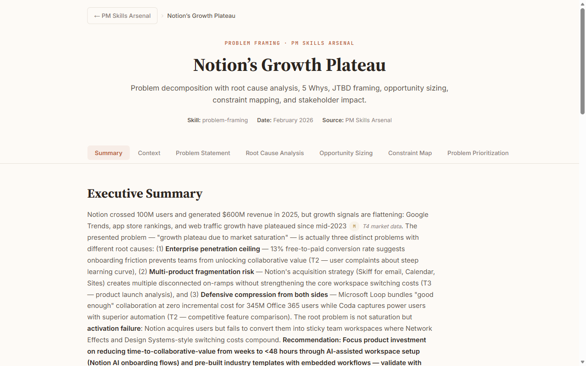

Agent Prime
Your AI forgets everything between sessions. Your corrections vanish. Your output sounds like everyone else's. None of it gets better on its own.
Agent Prime is the fix. Seven layers of persistent infrastructure — markdown files that give AI your thinking, your memory, your standards, and a recursive loop that compounds every session.
Three ceilings
What breaks when you try to do serious work with AI
Context Ceiling
Every session starts from zero. Your goals, your thinking patterns, what you tried last week — gone. Agent Prime retains 42+ key decisions, 14+ voice corrections, and 11+ agent design learnings. Every session starts where the last one ended.
Consistency Ceiling
You fix the same mistake three times. Each correction is local to one session. Agent Prime captures each mistake as a permanent rule. The rule propagates to every agent that needs it. The mistake cannot recur.
Throughput Ceiling
One conversation, one task, one thread. Agent Prime runs parallel workstreams — research, synthesis, writing, analysis — each agent carrying encoded expertise. You review and decide. The system does the rest.
Three levels
How people actually use AI, and where Agent Prime sits
AI as Tool
Give AI your thinking model — your frameworks, evidence standards, quality bar. Output quality jumps immediately.
AI as Partner
It challenges you. Each conversation sharpens your mental model. AI as thinking partner, pushing back where you're wrong.
AI as Infrastructure
A system of agents pursuing your goals. Every session makes the next one smarter. Recursive loops. A system that builds systems. Agent Prime is what Level 3 looks like in practice.
The System
Seven layers, each independently useful. Together, they compound.
View the full system map →Identity
One markdown file that encodes who you are — your thinking patterns, judgment heuristics, epistemic guardrails, and operating principles. AI becomes dramatically more effective when it knows how you think.
Explore Identity →Memory
Corrections compound across every session. Fix something in one agent, it propagates everywhere. A dependency map ensures nothing drifts. The system gets smarter every time you use it.
Explore Memory →Agents
Eleven specialized agents — scout, synthesizer, writer, planner, builder, and more. Each is a standalone markdown prompt. Run one, run several, compose them into workflows. Each works on its own.
Explore Agents →Orchestration
A registry tracks every work item. A dispatch queue sequences what happens next. A briefing pipeline tells you what's overdue, what's ready, and what needs your input. Wake up to a system that already knows the plan.
Explore Orchestration →Skills
Plug domain expertise into any agent. Skills encode how to think about a problem — frameworks, failure modes, quality gates, adversarial self-critique. Encoded methodologies, portable across agents.
Explore Skills →Craft
A design system and templates that turn markdown into publication-quality pages. Theses with sticky navigation. Investment dashboards with sortable tables. Output that carries your voice and design standards.
Explore Craft →The Recursive Loop
Every session produces learnings. Learnings propagate to agent prompts. Better prompts produce better output. Better output reveals subtler corrections. The system audits itself, flags staleness, and pushes work forward. The reason the whole thing works.
Explore The Loop →A single person operating with the output, consistency, and strategic depth of a small team — with every session compounding on the last.
Where do you start?
Pick the layer that solves your most pressing problem.
Identity
AI becomes dramatically more effective when it knows how you thinkMemory
Every correction compounds across every session and every agentAgents
Run research, writing, and analysis in parallel with specialized agentsOrchestration
A system that tracks everything, sequences work, and knows the planSkills
Encode domain expertise as repeatable methodology any agent can useCraft
Publication-quality output that carries your voice and design standardsThe whole system
All seven layers, recursive improvement, compounding from day one → Clone Agent PrimeBuilt with Agent Prime
Every artifact below was produced by the system. Actual rendered output.

The Meta-Skill Thesis

Notion’s Growth Plateau

The Personalization Paradox
See what it produces
Real pipeline outputs. One sentence in, pages of structured analysis out.
“Map the AI robotics industry for investment.”
8-layer value chain · bottleneck scores · 6 scenarios · 4-lens valuation · stress-tested watchlist
“Build me a complete product strategy.”
Problem framing · research synthesis · competitive war map · metric design · product spec · positioning narrative
“Level up my 20-person PM team for the AI era.”
Research signals · structural thesis · team OS architecture · phased implementation plan
The same questions asked to raw AI produce 500–800 words of generic advice. Agent Prime produces 30–50 pages of evidence-graded, framework-driven, actionable analysis. See the comparisons →
Get Started
Three ways in: try the hosted preview, run the guided first-time setup, or clone and customize the full system.
Try the live preview
Open the hosted workspace MVP and see the product-shaped direction before you clone anything.
Run first-time setup
Clone the repo, run one command, then choose preview, quick trial, or guided onboarding.
Clone and customize
Take the full system — eleven agents, seven layers, and recursive improvement — and make it yours.
git clone https://github.com/avyayalaya/agent-prime
python meta/scripts/first_run.py